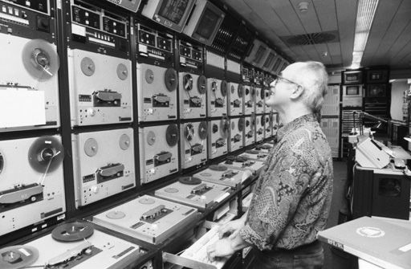

The Turkestani political diaspora during the Cold War (1950–1990): organizations, press and radio in the West
After World War II a community of Turkestani political émigrés formed in the West — mainly West Germany (Munich), Turkey (Istanbul) and later the United States. It was made up of pre-war émigrés, former POWs and veterans of the Turkestan Legion. The community's central voice became Radio Liberty, broadcast from Munich; scholars such as Baymirza Hayit wrote the history of Turkestan. This facts-only history presents the subject's contested aspects with sourced attribution.

The most political layer of the Uzbek and broader Turkestani diaspora in the West took shape during the Cold War. After 1945, émigrés stranded in Western Europe spent several generations trying to stay connected to the homeland through press, scholarship and radio. The following sets out this diaspora's history on verified facts only; contested or single-source details are flagged and attributed.
Who the émigrés were
The Turkestani diaspora in the West was made up of several groups: pre-war political émigrés who left after the Turkestan Autonomy was dissolved and the Basmachi movement suppressed; former Soviet POWs and forced laborers (Ostarbeiter) of World War II; and veterans of the Turkestan Legion formed under German command. Most settled in West Germany (especially Munich), Turkey (Istanbul) and, from the late 1950s, the United States. The Turkestan Legion denotes units of Turkic Soviet POWs within the Wehrmacht, and remained the politically most contested part of the diaspora after the war — these facts are stated neutrally, without glorification.
The legacy of Mustafa Chokay
The roots of Turkestani political emigration in the West go back before the war. Mustafa Chokay (25 December 1890 – 27 December 1941, Berlin) was, from 1921, the leading Turkestani émigré in Europe (at Nogent-sur-Marne near Paris) and edited the journal 'Yash Turkistan' (Young Turkestan) — its Berlin edition ran 1929–1939, with about 117 issues (some sources tie the journal to Istanbul, 1927). Chokay declined to lead the Turkestan Legion in 1941 and died in Berlin that year. The post-war Munich press consciously continued this émigré-nationalist publishing tradition.

Veli Kayyum and the National Turkestani Unity Committee
After Chokay, the movement was led by Veli Kayyum (Veli Kajum; 15 July 1904, Tashkent – 13 August 1993, Düsseldorf), who had gone to Germany to study in 1922. He chaired the National Turkestani Unity Committee (German: Nationalturkestanisches Einheitskomitee), founded in August 1942 and financed by the Nazi Ostministerium, which handled the affairs of the Turkestan Legion. According to German sources he collaborated with the Nazi authorities — these wartime-collaboration details (including a start in the 1930s) rest largely on encyclopedic sources and so are given 'according to [the source],' not as settled fact.
Baymirza Hayit — historian of Turkestan
The diaspora's most influential scholarly voice was Baymirza Hayit (17 December 1917, Namangan – 31 October 2006, Cologne) (an RFE/RL obituary gives his birth year as 1916; the precise dated 1917 is used here). He graduated from Tashkent University in 1939, was conscripted into the Red Army, captured by German forces in 1941, and then served as an officer in the Turkestan Legion. After the war he remained in West Germany, defended his doctorate at the University of Münster in 1950, and lived and worked in Cologne. Hayit wrote more than 15 books on Turkestan and its national movements — including 'Turkestan im XX. Jahrhundert' (1956) and 'Basmatschi' (1992); his works were banned in the USSR.
The press: the journal Milli Türkistan
The committee's main publication was the journal 'Milli Türkistan' (National Turkestan). According to catalog and research data the journal appeared in Berlin (1942–1945), Geneva (1949–1954) and Düsseldorf (1962–1975) — these year ranges come from a thesis and book catalogs rather than an academic edition, and are given as 'reported.' This press continued the émigré-nationalist publishing of the pre-war Chokay tradition.
Radio Liberty — the voice of the diaspora
The diaspora's widest platform was Radio Liberation/Radio Liberty, broadcast from Munich. The radio made its first broadcast on 1 March 1953 from Munich on shortwave; on 18 March 1953 a Turkestan editorial office was established, broadcasting in Kazakh, Uzbek, Kyrgyz, Tajik, Turkmen, Karakalpak and Uyghur — carrying Uzbek-language broadcasts to Soviet Central Asia. By December 1954 the radio broadcast in 17 languages. Soviet jamming continued until 1988. RFE/RL kept its headquarters in Munich until 1995, then moved to Prague. The scholarly literature records that Turkestani émigrés staffed and shaped the Uzbek service (RUDN academic article).
Centers of the diaspora
Munich was the political-organizational and broadcasting hub (Radio Liberty HQ 1953–1995). Istanbul/Turkey was a scholarly and publishing center: Hayit lectured at Istanbul, Hacettepe and Marmara universities. Families moved to the US from the late 1950s, chiefly to the New York area; the Turkistanian American Association re-registered in New York in 1961 and later (2007) opened a community center in Dover, New Jersey.
Decline and legacy
The founding generation died off at the turn of the century: Chokay in 1941, Kayyum in 1993, Hayit in 2006. With the end of jamming (1988) and the dissolution of the USSR (1991), the diaspora's Cold-War role passed into history — Radio Liberty opened bureaus inside the homeland and its headquarters moved to Prague in 1995. In independent Uzbekistan attitudes to this diaspora's legacy were complicated: per an RFE/RL obituary, Hayit's works were not published in the country and his 1992 visit was cut short after objections from war veterans (a single-source account). This guide states only verified facts.

Sources
- RFE/RL — Obituary of Baymirza Hayit (1917/1916–2006; Turkestan Legion; historian in Cologne; works unpublished in Uzbekistan)
- Wikipedia (EN) — Baymirza Hayit (born 17 Dec 1917, Namangan; PhD Münster 1950; Turkestan im XX. Jahrhundert 1956)
- Wikipedia (DE) — Veli Kajum-chan (15 July 1904 Tashkent – 13 Aug 1993 Düsseldorf; National Turkestani Unity Committee, 1942; Ostministerium)
- Wikipedia (EN) — Mustafa Chokaev (d. 27 Dec 1941 Berlin; Yash Turkistan, Berlin edition 1929–1939, ~117 issues; declined Legion leadership)
- Times of Central Asia — Radio Liberty in Central Asia (first broadcast 1 March 1953 from Munich; Turkestan desk 18 March 1953; jamming until 1988)
- Wikipedia (EN) — RFE/RL (Munich HQ until 1995; moved to Prague)
- RUDN Journal of Russian History — U.S. and 'Turkestan' Political Exiles during the Cold War: Radio Liberty